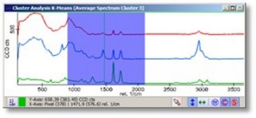

|
图谱查看器鼠标模式
|
您可以使用图谱查看器环形菜单更改图谱查看器的鼠标模式。
鼠标移动：
如果您之前选择了其他鼠标模式并且不再想使用特殊鼠标模式，切换到鼠标移动模式。
鼠标标记：
鼠标标记模式用于操作掩模或将区域发送到其他软件部分。
当前选定的区域在查看器中高亮显示：

如果其他软件部分正在监听范围以便您可以在图谱查看器中绘制范围，此模式会自动选择。当其他软件部分停止监听时，它将自动切换回鼠标移动模式。
如果您执行ASCII导出到外部程序，仅导出当前标记的区域。如果未选择区域，则导出完整的图谱/光谱。
在同一位置点击并释放鼠标以清除鼠标标记设置的区域。
有关操作掩模的更多可能性，参见图谱查看器掩模操作。
鼠标缩放：
鼠标跟随数据：
参见图谱查看器模式。